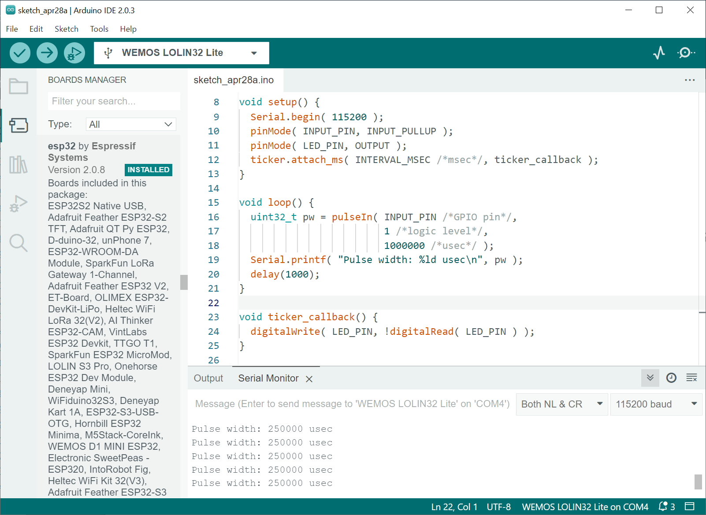

การสร้างสัญญาณพัลส์และวัดความถี่โดยใช้ Arduino-ESP32#
▷ Pulse Generation & Frequency Measurement#
บทความนี้กล่าวถึง ตัวอย่างการเขียนโค้ด Arduino สำหรับบอร์ดไมโครคอนโทรลเลอร์ ESP32 เพื่อสาธิตการสร้างสัญญาณพัลส์ต่อเนื่องที่มีคาบหรือความถี่คงที่ (Periodic Signals) และการนับจำนวนพัลส์ในช่วงเวลาหนึ่งสำหรับการนำไปคำนวณค่าความถี่ของสัญญาณ
การสร้างสัญญาณพัลส์และสัญญาณที่มีคาบสำหรับ ESP32 ทำได้หลายวิธี เช่น
- การใช้ไลบรารี ESP32 Ticker
- การใช้วงจร LEDC (LED Control) ของชิป ESP32
- การใช้วงจร RMT (Remote Control Transceiver) ของชิป ESP32
การวัดความถี่ของสัญญาณที่มีคาบ หรือนับจำนวนพัลส์ในหนึ่งช่วงเวลา ก็สามารถใช้เทคนิคที่แตกต่างกันหลายวิธี เช่น
- การใช้คำสั่ง
pulseIn()ของ Arduino API เพื่อวัดความกว้างของพัลส์ - การตรวจสอบขอบขาขึ้นหรือขาลงของสัญญาณอินพุต และเปิดใช้งานอินเทอร์รัพท์ภายนอก เพื่อนับเหตุการณ์ที่เกิดขึ้น
- การใช้วงจร Pulse Counter (PCNT) ของชิป ESP32
สำหรับการทดสอบโค้ดโดยใช้ฮาร์ดแวร์จริง ได้เลือกใช้บอร์ด WeMos LOLIN32 Lite ซึ่งเป็นบอร์ดไมโครคอนโทรลเลอร์ ESP32 ที่มีราคาไม่แพง
▷ Ticker-based Pulse Generation#
โค้ดตัวอย่างนี้ สาธิตการสร้างสัญญาณที่เป็นพัลส์ โดยใช้ไลบรารี Ticker ที่เป็นส่วนหนึ่งของ Arduino-ESP32 Core การทำงานของ Ticker เกี่ยวข้องกับการใช้งานวงจร General-Purpose Hardware Timer ภายในชิป ESP32 มีโหมดการทำงานให้เลือกใช้ 2 โหมด คือ ทำซ้ำ (Periodic) และ ทำครั้งเดียว (Once หรือ One-Shot)
ในตัวอย่างนี้ ได้เลือกใช้โหมดทำซ้ำ เพื่อเรียกใช้ฟังก์ชัน User-defined Callback ด้วยอัตราคงที่ เช่น
ฟังก์ชัน ticker_callback() ที่ทำหน้าที่สลับสถานะลอจิกที่ขาเอาต์พุต LED_PIN ทุก ๆ 250 มิลลิวินาที
หากต้องการจะวัดความกว้างของพัลส์ช่วงที่เป็น High (ลอจิก '1') ก็ให้ใช้ลวดสายไฟ
เชื่อมต่อจากขา GPIO22 (เอาต์พุต) ไปยังขา GPIO5 (อินพุต)
และใช้คำสั่ง pulseIn(...) ของ Arduino API เพื่อวัดค่าความกว้างของพัลส์ที่ขาอินพุตดังกล่าว
และจะได้ค่าตัวเลขในหน่วยเป็นไมโครวินาที
#include <Ticker.h> // Import the Ticker library
// Note: Connect GPIO22 (output) to GPIO5 (input)
#define LED_PIN (22)
#define INPUT_PIN (5)
#define INTERVAL_MSEC (250)
Ticker ticker; // Create a Ticker object
void setup() {
Serial.begin( 115200 );
pinMode( INPUT_PIN, INPUT_PULLUP );
pinMode( LED_PIN, OUTPUT );
// Attach a callback function (ISR) to the Ticker
ticker.attach_ms( INTERVAL_MSEC /*msec*/, ticker_callback );
}
void loop() {
// Measure the high pulse width of the input signal
uint32_t pw = pulseIn( INPUT_PIN /*GPIO pin*/,
1 /*logic level*/,
1000000 /*timeout in usec*/ );
// Show the measured pulse width
Serial.printf( "Pulse width: %ld usec\n", pw );
delay(1000);
}
void ticker_callback() { // The callback function for Ticker
// Toggle the LED output
digitalWrite( LED_PIN, !digitalRead( LED_PIN ) );
}
รูป: การจำลองการทำงานโดยใช้ Wokwi Simulator

รูป: การคอมไพล์และอัปโหลดโค้ดโดยใช้ Arduino IDE 2.0.3 และรับข้อความจากบอร์ด ESP32 (วัดความกว้างของพัลส์ได้ 250000 ไมโครวินาที)
รูป: บอร์ด ESP32 (WeMos Lolin32 Lite) ที่มีการต่อสายไฟจากขา GPIO5 ไปยัง GPIO22
▷ Timer-based Pulse Generation#
โค้ดตัวอย่างนี้ สาธิตการใช้งาน Hardware Timer ของ ESP32
และเขียนโค้ดโดยใช้คำสั่งของ Arduino-ESP32 Timer API
หากต้องการศึกษารายละเอียด ก็สามารถดูได้จากไฟล์
cores/esp32/esp32-hal-timer.c
ในโค้ดตัวอย่างนี้ มีการตั้งค่าและใช้งาน Hardware Timer
โดยใช้คำสั่ง timerBegin(...) เพื่อเลือกใช้ Timer หมายเลข 0 (จากทั้งหมด 4 ตัว ที่ให้เลือกใช้งานได้)
ตั้งค่าตัวหารความถี่เท่ากับ 80 ดังนั้นจะได้ความถี่ในการนับคำนวณได้จาก
APB Clock Frequency (80MHz default) หารด้วย 80 ได้เท่ากับ 1MHz หรือ 1 usec per Tick
นอกจากนั้นยังมีการเปิดใช้งานฟังก์ชัน Alarm ของ Timer
โดยใช้คำสั่ง timerAlarmWrite(...) เพื่อให้เกิดเหตุการณ์อินเทอร์รัพท์ เช่น ทุก ๆ 1000 ไมโครวินาที
และใช้คำสั่ง timerAttachInterrupt(...) เพื่อกำหนดให้ฟังก์ชันชื่อ timer_isr()
เป็นฟังก์ชัน ISR หรือ Callback Function คอยเพิ่มค่าของตัวแปรภายนอก
tick_counter ครั้งละหนึ่ง เมื่อเกิดอินเทอร์รัพท์
#define ESP_TIMER_NUMBER (0)
// Declare a global variable
volatile uint32_t tick_counter = 0;
// Declare a variable to keep the timer struct
hw_timer_t *timer = NULL;
// Use a FreeRTOS mutex to protect the shared variable (tick_counter)
portMUX_TYPE timer_mux = portMUX_INITIALIZER_UNLOCKED;
void IRAM_ATTR timer_isr() {
portENTER_CRITICAL_ISR( &timer_mux );
tick_counter++; // Increment the tick counter
portEXIT_CRITICAL_ISR( &timer_mux );
}
void setup() {
Serial.begin(115200);
Serial.println("\n\nESP32 Hardware Timer Demo...");
// Use the first hardware timer (0)
// Set prescaler to 80 -> Timer frequency = 80MHz/80 (1usec per tick)
// Note: The start will start automatically.
timer = timerBegin( ESP_TIMER_NUMBER /*timer number*/,
80 /*prescaler*/, true /*count up*/ );
// Attach the callback function (ISR) to the timer
timerAttachInterrupt( timer, &timer_isr, true );
// Set alarm to call the ISR function every 1msec
timerAlarmWrite( timer, 1000 /*period (ticks)*/,
true /*autoreload*/ );
// Start the alarm
timerAlarmEnable( timer );
// Reset counter value of the timer to 0
timerWrite( timer, 0 /*value*/ );
// timerStop( timer );
// timerStart( timer );
// timerDetachInterrupt( timer );
// timerEnd( timer );
}
void loop() {
portENTER_CRITICAL( &timer_mux );
uint32_t value = tick_counter; // Read the current tick counter
portEXIT_CRITICAL( &timer_mux );
Serial.printf( "Ticks: %lu\n", value );
delay(1000);
}

รูป: ตัวอย่างการทดสอบโค้ดโดยใช้บอร์ด ESP32 และข้อความเอาต์พุตที่ได้จากการทำงาน
ถัดไปเป็นการแก้ไขโค้ดตัวอย่าง เพื่อสร้างสัญญาณเอาต์พุตสำหรับ LED และวัดความกว้างของพัลส์ของสัญญาณอินพุต โดยใช้ขา GPIO22 เป็นเอาต์พุต และจะต้องเชื่อมต่อด้วยสายไฟไปยังขา GPIO5 เพื่อใช้เป็นขาอินพุตและวัดความกว้างของพัลส์
การทำงานของโค้ดตัวอย่าง จะทำให้เกิดการสลับสถานะลอจิกขา GPIO22 ทุก ๆ 100 มิลลิวินาที
และค่าความกว้างของพัลส์สามารถวัดได้ โดยใช้คำสั่ง pulseIn(...)
// Note: Connect GPIO22 (output) to GPIO5 (input)
#define LED_PIN (22)
#define INPUT_PIN (5)
#define ESP_TIMER_NUMBER (0)
#define INTERVAL_MSEC (100)
// Declare a global variable
volatile uint32_t tick_counter = 0;
// Declare a variable to keep the timer struct
hw_timer_t *timer = NULL;
void IRAM_ATTR timer_isr() {
tick_counter++; // Increment the tick counter
if ( tick_counter == INTERVAL_MSEC ) {
// Toggle the LED
digitalWrite( LED_PIN, !digitalRead(LED_PIN) );
// Reset the tick counter
tick_counter = 0;
}
}
void setup() {
Serial.begin(115200);
Serial.println("\n\nESP32 Hardware Timer Demo...");
pinMode( LED_PIN, OUTPUT );
pinMode( INPUT_PIN, INPUT_PULLUP );
// Use the first hardware timer (0)
// Set prescaler to 80 -> Timer frequency = 80MHz/80 (or 1usec per tick)
// Note: The start will start automatically.
timer = timerBegin( ESP_TIMER_NUMBER /*timer number*/,
80 /*prescaler*/, true /*count up*/ );
// Attach the callback function (ISR) to the timer
timerAttachInterrupt( timer, &timer_isr, true );
// Set alarm to call the ISR function every 1msec
timerAlarmWrite( timer, 1000 /*period (ticks)*/, true /*autoreload*/ );
// Start the alarm
timerAlarmEnable( timer );
}
void loop() {
// Measure the pulse width (in usec)
uint32_t pw = pulseIn( INPUT_PIN, 1, 1000000 );
Serial.printf( "Pulse width: %lu usec\n", pw );
delay(1000);
}
รูป: ตัวอย่างการทดสอบโค้ดโดยใช้บอร์ด ESP32 และข้อความเอาต์พุตที่ได้จากการทำงาน (วัดความกว้างของพัลส์ได้ 100000 ไมโครวินาที หรือ 100 มิลลิวินาที)
▷ RMT-based Pulse Generation#
โค้ดตัวอย่างนี้ สาธิตการสร้างสัญญาณแบบพัลส์ โดยใช้วงจร RMT จำนวนหนึ่งช่องสัญญาณ (เรียกว่า RMT TX Channel) ทำหน้าที่เป็นตัวส่งสัญญาณพัลส์หนึ่งลูกคลื่นออกไป และทำซ้ำหรือวนลูปด้วยอัตราคงที่
ตัวแปร rmt_tx_cfg ที่มีชนิดข้อมูลเป็น rmt_config_t จะถูกใช้ในการตั้งค่าสำหรับการทำงานของ
RMT จำนวนหนึ่งช่องสัญญาณ (เลือกใช้ RMT_CHANNEL_0) เมื่อเรียกใช้ฟังก์ชัน
rmt_config(...) และเลือกใช้ขา GPIO22 เป็นเอาต์พุต
การส่งสัญญาณออกไปโดยใช้ RMT จะต้องมีการกำหนดรูปแบบของข้อมูลในรูปแบบที่เรียกว่า RMT Symbol ซึ่งจะประกอบด้วยช่วงที่เป็นลอจิก 1 และช่วงที่เป็นลอจิก 0 พร้อมกำหนดความกว้างของแต่ละช่วง
วงจร RMT ภายในชิป ESP32 ทำงานด้วยสัญญาณ CLK ที่มีความถี่ 80MHz หรือใช้ความถี่ต่ำกว่าได้ โดยการกำหนดค่าตัวหารความถี่ ในตัวอย่างนี้ได้เลือกค่าตัวหารความถี่เท่ากับ 80 ดังนั้น RMT จะทำงานด้วยความถี่ 80MHz/80 หรือ 1MHz หรือ 1usec ต่อหนึ่งไซเคิล (เรียกว่า RMT tick)
ในโค้ดตัวอย่าง มีการใช้ตัวแปร pulse_item ที่มีชนิดข้อมูลเป็น rmt_item32_t
และการเรียกใช้ฟังก์ชัน rmt_write_items(...) ทำหน้าที่กำหนดความกว้างของพัลส์
ช่วงที่เป็นลอจิก 1 และช่วงที่เป็นลอจิก 0 เช่น เท่ากับ 500 (เป็นข้อมูลแบบเลขจำนวนเต็ม 15 บิต) ซึ่งหน่วยเป็น 1 ไมโครวินาที
ถ้าวัดสัญญาณเอาต์พุตที่ได้ จะมีความถี่เท่ากับ 1kHz หรือ มีคาบเท่ากับ 1000 usec
วงจร RMT รองรับการมอดูเลตสัญญาณ (Signal Modulation) ด้วยสัญญาณพาหะ (Carrier Signal) ที่มีความถี่สูงกว่า เช่น ในกรณีที่ต้องการสร้างสัญญาณสำหรับอุปกรณ์รีโมตอินฟราเรด แต่ในตัวอย่างนี้ ไม่มีการมอดูเลตสัญญาณเอาต์พุต
#include <driver/rmt.h> // Required for RMT
// Note: Connect GPIO22 (output) to GPIO5 (input)
#define INPUT_PIN (GPIO_NUM_5)
#define RMT_GPIO_PIN (GPIO_NUM_22)
#define RMT_CHANNEL (RMT_CHANNEL_0)
// Define the RMT configuration parameters
// - The RMT clock is set to 80MHz/80 = 1MHz (1usec per cycle).
// - The carrier frequency is not used (no signal modulation).
const rmt_config_t rmt_tx_cfg = {
.rmt_mode = RMT_MODE_TX, // RMT mode: transmitter
.channel = RMT_CHANNEL, // RMT channel to use
.gpio_num = RMT_GPIO_PIN, // GPIO number to output the signal
.clk_div = 80, // RMT clock divider (80MHz/80 = 1MHz)
.mem_block_num = 1, // Number of memory blocks to use
.tx_config = { // Configuration for TX
.carrier_level = RMT_CARRIER_LEVEL_HIGH, // Carrier level
.idle_level = RMT_IDLE_LEVEL_LOW, // Set idle level to low
.carrier_duty_percent = 50, // Carrier duty cycle
.carrier_en = false, // Disable carrier
.loop_en = true, // Enable loop mode
.idle_output_en = true, // Enable idle level
}
};
// Define the RMT item for a 1kHz square wave
const rmt_item32_t pulse_item = {
{{
.duration0 = 500, // High pulse width in cycles
.level0 = 1, // High level
.duration1 = 500, // Low pulse width in cycles
.level1 = 0 // Low level
}}
};
void setup() {
Serial.begin( 115200 );
pinMode( INPUT_PIN, INPUT_PULLUP );
// Initialize RMT for TX mode
ESP_ERROR_CHECK( rmt_config( &rmt_tx_cfg ) );
ESP_ERROR_CHECK( rmt_driver_install(RMT_CHANNEL, 0, 0) );
// Write pulse data and wait for RMT TX done
rmt_write_items( RMT_CHANNEL, &pulse_item, 1, true );
}
void loop() {
// Pulse width measurment
uint32_t pw = pulseIn( INPUT_PIN /*GPIO pin*/,
1 /*logic level: high pulse*/,
1000000 /* timeout in usec*/ );
Serial.printf( "Pulse width: %ld usec\n", pw );
Serial.printf( "Frequency: %.3lf kHz\n", 1000.0/(2*pw) );
delay(1000);
}
รูป: การจำลองการทำงานของโค้ดด้วย Wokwi Simulator (วัดความถี่ของสัญญาณ 1kHz)
รูป: การคอมไพล์และอัปโหลดโค้ดโดยใช้ Arduino IDE และรับข้อความจากบอร์ด ESP32 (วัดความถี่ของสัญญาณ 1kHz)
รูป: การวัดสัญญาณด้วยออสซิลโลสโคป (RIGOL DS1054Z) และได้ค่าความถี่ 1kHz
▷ LEDC-based Pulse Generation#
วงจร LEDC ภายในชิป ESP32 (ซึ่งมีทั้งหมด 16 ช่องเอาต์พุต) เหมาะสำหรับการสร้างสัญญาณแบบ PWM (Pulse Width Modultion) ที่สามารถปรับค่า Duty Cycle (ความกว้างของพัลส์ช่วงที่มีลอจิกเป็น High) และนำไปใช้ในการปรับความสว่างของ LED โค้ดตัวอย่างนี้ สาธิตการสร้างสัญญาณแบบพัลส์ โดยใช้ LEDC ช่องหมายเลข 0
ฟังก์ชันที่สำคัญและเกี่ยวข้องกับการทำงานของ LEDC ได้แก่
uint32_t ledcSetup(uint8_t channel, uint32_t freq, uint8_t bits): ตั้งค่าการใช้งาน LEDC สำหรับช่องหมายเลขchannelระบุความถี่freq(หน่วยเป็น Hz) และความละเอียดหรือจำนวนบิตbits(เลือกได้ในช่วง 1 - 20 บิต) สำหรับการตั้งค่า Duty Cyclevoid ledcAttachPin(uint8_t pin, uint8_t channel): เลือกใช้ขาpinสำหรับช่องเอาต์พุตchannelของ LEDCvoid ledcWrite(uint8_t chan, uint32_t duty): กำหนดค่า Duty Cycle สำหรับช่องเอาต์พุตchannel
ในโค้ดตัวอย่างนี้ ได้เลือกใช้จำนวนบิต เท่ากับ 8 บิต และความถี่เท่ากับ 100 kHz เพื่อสร้างสัญญาณ PWM โดยใช้ LEDC (Channel 0) ที่ขา GPIO22 แต่ถ้าต้องการได้ความถี่ที่สูงขึ้น จะต้องลดจำนวนบิตที่ใช้สำหรับการระบุค่า Duty Cycle
การนับจำนวนพัลส์ที่เกิดขึ้น จะใช้วิธีการตรวจจับขอบขาขึ้น (Rising Edge)
และเปิดใช้งานอินเทอร์รัพท์ภายนอก โดยใช้คำสั่ง attachInterrupt(...) ของ Arduino API
และสร้างฟังก์ชัน pulse_isr() เพื่อใช้เป็น ISR และถูกเรียกใช้โดยอัตโนมัติ เมื่อเกิดอินเทอร์รัพท์ที่เกี่ยวข้อง
แม้ว่าวิธีนี้จะใช้นับจำนวนพัลส์ในช่วงเวลาที่กำหนดได้ แต่ก็มีข้อจำกัดเชิงเวลาในการตอบสนองต่อการเกิดอินเทอร์รัพท์ภายนอก (Interrupt Latency) ดังนั้นถ้าสัญญาณอินพุตมีความถี่สูง (เช่น สูงกว่า 200 kHz) ก็จะทำให้ค่าที่วัดได้ผิดพลาดจากค่าที่เป็นจริง
ในตัวอย่างนี้ สัญญาณเอาต์พุตที่ขา GPIO22 จะถูกป้อนกลับเข้าที่ขา GPIO5 หากให้เวลานับจำนวนพัลส์ที่เกิดขึ้นในช่วงเวลา 1000 มิลลิวินาที (หรือต่อหนึ่งวินาที) ก็สามารถนำค่าที่ได้มาคำนวณเป็นค่าความถี่ของสัญญาณ
// Note: Connect GPIO22 (output) to GPIO5 (input)
#define INPUT_PIN (5)
#define LEDC_GPIO_PIN (22)
#define LEDC_CHANNEL (0)
#define NUM_BITS (8)
#define FREQ_HZ (1000UL)
volatile uint32_t count = 0;
uint32_t last_time_msec = 0;
void IRAM_ATTR pulse_isr() { // ISR to handle pulse counter events
count++; // Increment the pulse counter
}
void setup() {
// Initialize serial communication
Serial.begin( 115200 );
// Set the LED pin as an output
pinMode( LEDC_GPIO_PIN, OUTPUT );
// Set the input pin for the pulse counter
pinMode( INPUT_PIN, INPUT_PULLUP );
// Attach the ISR to the input pin
attachInterrupt( INPUT_PIN, pulse_isr, RISING );
// see: cores/esp32/esp32-hal-ledc.c
// Initialize the LEDC channel 0, use 8-bit resolution.
ledcSetup( LEDC_CHANNEL, FREQ_HZ, NUM_BITS );
// Attach the GPIO22 pin to the LEDC Channel 0
ledcAttachPin( LEDC_GPIO_PIN, LEDC_CHANNEL );
// Set the duty cycle for the PWM output (50%)
ledcWrite( LEDC_CHANNEL, (1<<(NUM_BITS-1))-1 );
delay(10);
// Read the PWM frequency.
Serial.printf( "LEDC Freq.: %ld Hz\n", ledcReadFreq(LEDC_CHANNEL) );
count = 0;
last_time_msec = millis();
}
void loop() {
static uint32_t saved_count;
uint32_t now = millis();
if ( now - last_time_msec >= 1000 ) { // print count every 1 second
saved_count = count;
// Reset the pulse count
count = 0;
if (saved_count >= 1000 ) {
// Calculate the frequency in kHz
float frequency = saved_count/1000.0;
Serial.printf("Frequency: %.3f kHz\n", frequency);
} else {
// Calculate the frequency in Hz
int frequency = saved_count;
Serial.printf("Frequency: %d Hz\n", frequency);
}
// Save the timestamp
last_time_msec = now;
}
}

รูป: การจำลองการทำงานด้วย Wokwi Simulator (สัญญาณเอาต์พุตที่มีความถี่ 1kHz)
การสร้างสัญญาณ PWM สำหรับ ESP32 ก็อาจจะใช้คำสั่งของ Arduino API ได้ดังนี้
// PWM frequency 1kHz
analogWriteFrequency( 1000 ); // Frequency: 1kHz
analogWriteResolution( 8 ); // Resolution: 8-bit
analogWrite( LEDC_GPIO_PIN, 127 ); // Duty cycle: 50%
รูป: การคอมไพล์และอัปโหลดโค้ดโดยใช้ Arduino IDE และรับข้อความจากบอร์ด ESP32 (สร้างสัญญาณเอาต์พุตที่มีความถี่ 100 kHz)
ถ้าจะใช้ความถี่สูง เช่น 10MHz จะต้องลดจำนวนบิตลง เช่น มีขนาดเพียง 2 บิต ตามตัวอย่างต่อไปนี้
// LEDC Channel 0, 10MHz, 2-bit resolution
ledcSetup( LEDC_CHANNEL, 10000000UL /*Hz*/, 2 /*bits*/ );
// Attach the GPIO22 pin to LEDC Channel 0
ledcAttachPin( LEDC_GPIO_PIN, LEDC_CHANNEL );
// Set the PWM duty cycle (~50%)
ledcWrite( LEDC_CHANNEL, 2 );
รูป: ตัวอย่างรูปคลื่นสัญญาณ 10MHz เมื่อวัดด้วยออสซิลโลสโคป (RIGOL DS1054Z)
▷ ESP32 Pulse Counter#
ตัวอย่างถัดไปเป็นการสาธิตการใช้งานวงจร Pulse Counter (PCNT) ของชิป ESP32 เหมาะสำหรับการนับจำนวนพัลส์ของสัญญาณอินพุต หรือนำไปคำนวณค่าความถี่หากเป็นสัญญาณที่มีคาบ
ในตัวอย่างนี้มีการสร้างและใช้ฟังก์ชันชื่อ init_pcnt() เพื่อตั้งค่าให้ PCNT ช่องอินพุตหมายเลข 0
รับอินพุตจากขา GPIO22 และให้ตัวนับขนาด 16 บิต ของ PCNT นับขึ้นครั้งละหนึ่ง เมื่อเกิดขอบขาขึ้น
นอกจากนั้นแล้วยังตั้งค่าสูงสุดไว้ที่ 32767 เมื่อนับถึงค่าดังกล่าว จะทำให้เกิดอินเทอร์รัพท์
(Overflow Interrupt) และฟังก์ชันชื่อ overflow_isr()
จะถูกเรียกใช้โดยอัตโนมัติ ค่าของตัวแปรภายนอก pcnt_overflows จะถูกเพิ่มขึ้นครั้งละหนึ่ง
เมื่อเกิดเหตุการณ์ดังกล่าว
การอ่านค่าปัจจุบันของตัวนับ PCNT จะใช้คำสั่ง pcnt_get_counter_value(...)
และถูกนำมาใช้ในการคำนวณจำนวนพัลส์ที่เกิดขึ้น โดยจะต้องใช้ค่า pcnt_overflows ร่วมด้วย
คำสั่งต่าง ๆ ที่เกี่ยวข้องกับการใช้งาน PCNT สามาารถดูได้จาก ESP-IDF Programming Guide - PCNT API
#include "driver/periph_ctrl.h"
#include "driver/gpio.h"
#include "driver/pcnt.h"
#include "soc/pcnt_struct.h"
// Settings for PWM generation
#define PWM_PIN (22)
#define PWM_FREQ (1000000UL)
#define NUM_BITS (2)
// Settings for PCNT
#define PCNT_INPUT_PIN (5)
#define PCNT_UNIT PCNT_UNIT_0
#define PCNT_H_LIM_VAL (32767)
#define PCNT_L_LIM_VAL (0)
// Declare global variables
volatile uint32_t pcnt_overflows = 0;
pcnt_isr_handle_t pcnt_isr_handle = NULL;
uint32_t last_time_msec = 0;
//------------------------------------------------------------------------------------
void IRAM_ATTR overflow_isr(void *arg) {
PCNT.int_clr.val = BIT( PCNT_UNIT );
//pcnt_counter_clear( PCNT_UNIT );
pcnt_overflows++;
}
//------------------------------------------------------------
void init_pcnt() {
// Configure the PCNT Channel 0 to operate in count-up mode
pcnt_config_t pcnt_config;
pcnt_config.pulse_gpio_num = PCNT_INPUT_PIN;
pcnt_config.ctrl_gpio_num = -1;
pcnt_config.hctrl_mode = PCNT_MODE_KEEP;
pcnt_config.lctrl_mode = PCNT_MODE_KEEP;
pcnt_config.counter_h_lim = PCNT_H_LIM_VAL;
pcnt_config.counter_l_lim = PCNT_L_LIM_VAL;
pcnt_config.pos_mode = PCNT_COUNT_INC;
pcnt_config.neg_mode = PCNT_COUNT_DIS;
pcnt_config.unit = PCNT_UNIT;
pcnt_config.channel = PCNT_CHANNEL_0;
pcnt_unit_config( &pcnt_config );
// Configure the PCNT filter
pcnt_set_filter_value( PCNT_UNIT, 2 );
pcnt_filter_enable( PCNT_UNIT );
// Attach an ISR function to the PCNT interrupt
pcnt_counter_pause( PCNT_UNIT );
pcnt_counter_clear( PCNT_UNIT );
pcnt_event_enable( PCNT_UNIT, PCNT_EVT_H_LIM );
pcnt_isr_register( overflow_isr, NULL, 0, &pcnt_isr_handle );
pcnt_intr_enable( PCNT_UNIT );
pcnt_counter_resume( PCNT_UNIT );
}
//------------------------------------------------------------
uint32_t read_pcnt() {
int16_t pcnt_count = 0;
pcnt_get_counter_value( PCNT_UNIT, &pcnt_count );
pcnt_counter_clear( PCNT_UNIT );
uint32_t count = pcnt_count + pcnt_overflows*PCNT_H_LIM_VAL;
pcnt_overflows = 0;
return count;
}
void setup() {
Serial.begin( 115200 );
Serial.println( "\nESP32 PCNT Demo...." );
pinMode( PCNT_INPUT_PIN, INPUT_PULLUP );
// Initialize the PCNT
init_pcnt();
// Create a PWM signal for test purpose
analogWriteResolution( NUM_BITS ); // Set PWM resolution(bits)
analogWriteFrequency( PWM_FREQ ); // Set PWM frequency
analogWrite( PWM_PIN, (1<<NUM_BITS)/2 ); // Set PWM duty cycle to 50%
delay(1000);
}
void loop( ) {
uint32_t now = millis(); // Read current time in msec
if ( now - last_time_msec >= 1000 ) { // Update every 1 second
uint32_t count = read_pcnt(); // Read the current value of PCNT
if ( count >= 1000 ) {
Serial.printf(" Freq. %.3f kHz\n", count / 1000.0 );
} else {
Serial.printf(" Freq. %lu Hz\n", count );
}
last_time_msec = millis(); // Save the last update time
}
}
ในกรณีที่สร้างสัญญาณ PWM ให้มีความถี่ 1MHz และ 8MHz ตามลำดับ จะได้ข้อความเอาต์พุตในลักษณะต่อไปนี้
รูป: ข้อความจากบอร์ด ESP32 ที่แสดงค่าความถี่ของสัญญาณที่วัดได้ (ได้ประมาณ 1000 kHz)
รูป: ข้อความจากบอร์ด ESP32 ที่แสดงค่าความถี่ของสัญญาณที่วัดได้ (ได้ประมาณ 8000 kHz)
รูป: การวัดสัญญาณเอาต์พุต (8MHz) โดยใช้ออสซิลโลสโคป (RIGOL DS1054Z)
▷ กล่าวสรุป#
บทความนี้ได้นำเสนอแนวทางการเขียนโค้ดสำหรับ Arduino-ESP32 เพื่อสร้างสัญญาณพัลส์ และวัดความกว้างของสัญญาณพัลส์ หรือความถี่ของสัญญาณที่มีคาบ โดยใช้วิธีที่แตกต่างกัน และเป็นวิธีที่เจาะจงใช้งานวงจรภายในของชิป ESP32
This work is licensed under a Creative Commons Attribution-ShareAlike 4.0 International License.
Created: 2023-04-28 | Last Updated: 2023-04-29